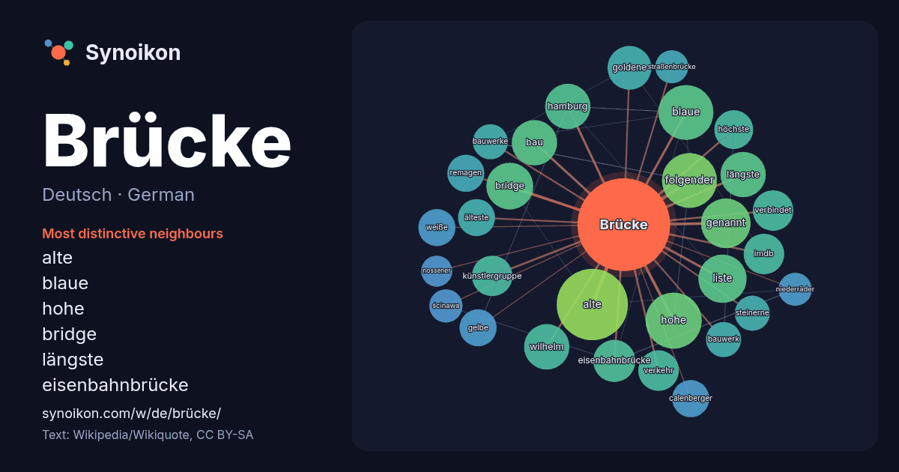

Deutsch · German · word of the day list
Brücke
“bridge” · The words found around it in 1125 instances from German Wikipedia, Wikiquote.

Most distinctive neighbours
- alte 25×
- blaue 22×
- hohe 16×
- bridge 16×
- längste 15×
- eisenbahnbrücke 14×
- goldene 14×
- imdb 13×
- künstlergruppe 13×
- folgender 12×
- calenberger 11×
- remagen 11×
- verbindet 11×
- gelbe 10×
- hamburg 9.8×
- steinerne 9.7×
- weiße 9.4×
- höchste 9.3×
- verkehr 9.3×
- bauwerke 9.1×
× = how many times more often than in general German Wikipedia text.
Most frequent neighbours
- alte 37
- hohe 23
- blaue 22
- folgender 22
- stadt 22
- genannt 18
- liste 17
- bridge 16
- bau 15
- berlin 15
- deutscher 15
- hamburg 15
- längste 15
- wilhelm 15
- goldene 14
- meter 14
- eisenbahnbrücke 13
- imdb 12
- künstlergruppe 12
- verbindet 12
In context
- rechtwinklig geführte gerade Brücke ist eine schiefe Brücke. Neben im Grundriss gekrümmten Brücken, werden auch im Aufriss gekrümmte Brücken gebaut, die der Höhenlage Wikipedia snippets · Brücke
- Die Brücke steht für: Institutionen und Vereinigungen Die Brücke (Gifhorn), ehemaliges Kulturinstitut in der Stadt Gifhorn, die den Glockenpalast errichtete Wikipedia snippets · Die Brücke
- … e, Soda-Brücke oder Geisterbrücke ist eine innerhalb Deutschlands gebräuchliche umgangssprachliche Bezeichnung für eine Brücke, die einfach Wikipedia snippets · So-da-Brücke
- Die Brücke – Transit in den Tod (dänischer Originaltitel Broen, schwedischer Originaltitel Bron), auch Bron – Die Brücke, ist eine dänisch-schwedisch-deutsche Wikipedia snippets · Die Brücke – Transit in den Tod
- Eisenbahn-Neubaustrecke von der Brücke bis zum Bahnhof Malmö Central. Richtung Kopenhagen (Drogdentunnel) Pylon-Durchfahrt Auf der Brücke Richtung Malmö (Schwedische Wikipedia snippets · Öresundbrücke
- … -Brücke e. V. wurde 1952 als Verein mit dem Ziel gegründet, eine wirtschafts-, finanz-, bildungs- und militärpolitische Brücke zwischen den Wikipedia snippets · Atlantik-Brücke
- Inzwischen war ein neuer Entwurf der Brücke von Marjan Pipenbaher ausgearbeitet worden, der eine Extradosed-Brücke mit sechs Pylonen, Spannweiten von 285 m Wikipedia snippets · Pelješac-Brücke
- Fußballspieler Matthias Brücken (* 1953), deutscher Fußballspieler Wolfgang Schmidt-Brücken (1895–nach 1943), deutscher Generalarzt Siehe auch: Brücke (Begriffsklärung) Wikipedia snippets · Brücken
More German words
- Arbeit
- Essen
- Familie
- Geld
- Geschichte
- Gesundheit
- Gold
- Gott
- Kunst
- Leben
- Macht
- Natur
- Tod
- Wahrheit
- Wasser
- Wissenschaft
- Zug
Precomputed on 2026-10-09 with default settings (±5 words, medium corpus). The interactive map can refresh it with live data.